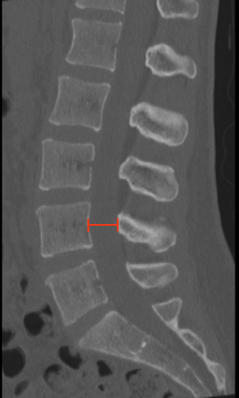

Adapted from: Feger J, Campos A, Murphy A, et al. CT lumbar spine (protocol). Reference article, Radiopaedia.org (Accessed on 03 Jan 2026) https://doi.org/10.53347/rID-90041
1) Description of Measurement
Lumbar AP canal diameter on CT quantifies the anteroposterior bony dimension of the spinal canal and is a classic metric for diagnosing developmental or degenerative lumbar spinal stenosis. It reflects the space available for the thecal sac and cauda equina and is particularly useful when MRI is unavailable or contraindicated.
2) Instructions to Measure
3) Normal vs. Pathologic Ranges
Key point:
Symptoms of neurogenic claudication are most likely when diameter is < 10 mm.
4) Important References
Tallroth K. Plain CT of the degenerative lumbar spine. Eur J Radiol. 1998 Jul;27(3):206-13. doi: 10.1016/s0720-048x(97)00168-x.
Jentzsch T, Mantel KE, Slankamenac K, et al. CT-based surrogate parameters for MRI-based disc height and endplate degeneration in the lumbar spine. BMC Med Imaging. 2024 Aug 13;24(1):213. doi: 10.1186/s12880-024-01395-1.
Khurana B, Prevedello LM, Bono CM, et al. CT for thoracic and lumbar spine fractures: Can CT findings accurately predict posterior ligament complex injury? Eur Spine J. 2018 Dec;27(12):3007-3015. doi: 10.1007/s00586-018-5712-z.
5) Other info....
AP diameter alone may underestimate severity when compression is asymmetric; combine with:
CT measurements reflect static bony stenosis and do not capture dynamic narrowing seen on extension.